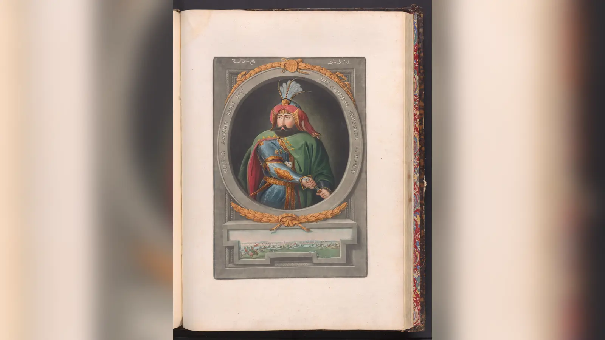
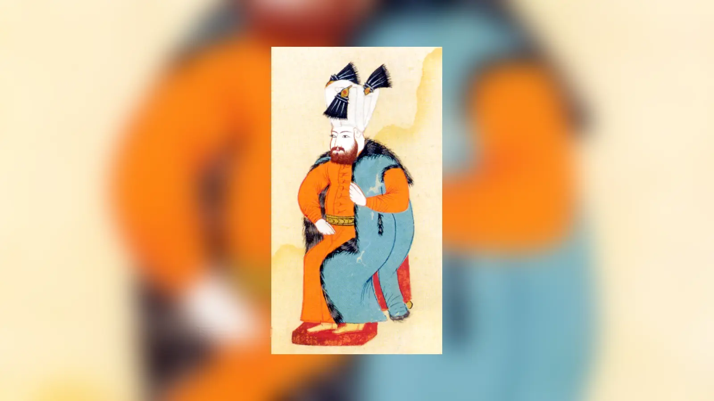
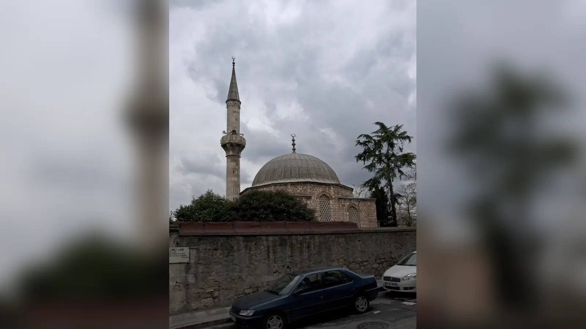
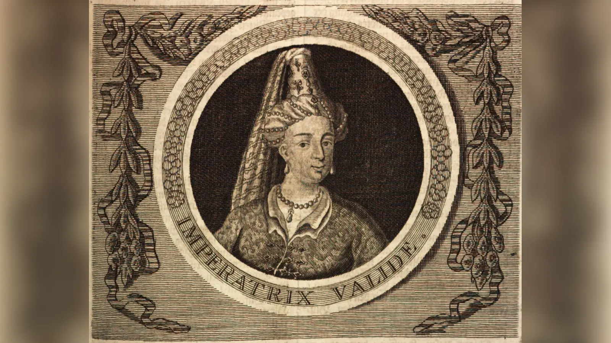

Osmanlı tahtına çıkması mümkün olmayan bir kadın, nasıl oldu da üç ayrı saltanat döneminde devlet yönetiminin merkezindeki en etkili kişilerden biri hâline geldi? Kösem Sultan’ın hayatını sıra dışı yapan yalnız iki padişahın annesi olması değildi. O, çocuk yaştaki bir hükümdarın annesi olarak naiplik yaptı, yetişkin bir oğlunun saltanatında yeniden merkezî konuma geldi, torununun tahta çıkışından sonra ise padişahın annesi hayattayken “Büyük Valide” sıfatıyla saraydaki ağırlığını korudu. Sadrazamların, yeniçeri ağalarının, harem görevlilerinin ve hanedan mensuplarının kesiştiği bir siyasi dünyanın içinde yaklaşık otuz yıl boyunca tekrar tekrar güç üretmeyi başardı.
Bu tablo, Kösem’i kolayca “Osmanlı’yı yöneten kadın” diye tanımlamaya elverişlidir. Fakat böyle bir cümle hem doğruya yaklaşır hem de önemli ayrıntıları örter. Çünkü Kösem’in gücü her dönemde aynı değildi. I. Ahmed’in hasekisi olduğu yıllardaki nüfuzu ile IV. Murad çocukken kullandığı naiplik yetkisi aynı şey değildi. IV. Murad yetişkinliğinde iktidarı kendi eline aldığında Kösem’in hareket alanı daraldı; Sultan İbrahim döneminde yeniden genişledi; IV. Mehmed’in saltanatında ise bu kez genç valide Turhan Sultan ve onun çevresiyle rekabete dönüştü. Dolayısıyla Kösem’in hayatı kesintisiz bir mutlak hâkimiyet hikâyesi değil, değişen kurumlar ve krizler içinde sürekli yeniden kurulan bir iktidar hikâyesidir.
Onu gerçekten anlamak için kişilik açıklamalarının ötesine geçmek gerekir. “Çok hırslıydı”, “entrikacıydı” veya tersine “devleti kurtarmaya çalışan fedakâr bir anneydi” demek, onlarca yıllık siyasi kariyeri tek bir karakter özelliğine indirger. Kösem’i olağanüstü güçlü yapan şey, valide sultanlık, hanedan anneliği, küçük yaştaki hükümdarlar, naiplik, veraset düzeninin değişmesi, saray patronajı, askerî gruplarla ilişkiler, büyük mali kaynaklar ve hükümdara erişim gibi farklı güç kanallarının aynı kişide birleşmesiydi. Fakat bu kanalların hiçbiri sınırsız değildi. Onun 1651’de sarayın içinde öldürülmesi, ulaştığı gücün büyüklüğünü gösterdiği kadar o gücün kırılganlığını da gösterir.
Kösem Sultan Kimdir ve Saraya Nasıl Geldi?
Kösem Sultan’ın saray öncesi hayatı hakkında kesin bilgi son derece sınırlıdır. Kaynaklarda ailesi ve doğum yeri konusunda güvenilir, ayrıntılı bir kayıt bulunmaz. Ortodoks bir din adamının kızı olduğu, Balkanlar veya Ege çevresinden geldiği yönünde farklı anlatılar vardır; ancak bunları kesin biyografik gerçekler gibi sunmak doğru değildir. Ölümünde yaklaşık altmış iki yaşında olduğu yolundaki rivayet kabul edilirse doğum tarihi 1589 civarına yerleştirilebilir. Saraya hangi tarihte ve hangi güzergâhla getirildiği de tam olarak bilinmez.
Kaynaklarda Mahpeyker ve Kösem adları birlikte görülür. “Kösem” lakabının kökeni için farklı açıklamalar yapılmıştır. Bazı yorumlar kelimeyi sürünün önünde giden öncü hayvan anlamıyla ilişkilendirip liderlik çağrışımı kurarken bazıları fiziksel özelliklerle bağlantı kurar. Bunların hiçbiri Kösem’in karakterini doğrudan kanıtlayan bilgiler değildir. Daha güvenli olan, Mahpeyker adının haremde kullanıldığı ve Kösem adının zamanla onu tanımlayan asıl isim hâline geldiğidir.
I. Ahmed’in saltanatı sırasında sarayda yükseldi ve padişahın önde gelen hasekilerinden biri oldu. IV. Murad’ı 1612’de, İbrahim’i 1615’te dünyaya getirmesi onun hanedan içindeki konumunu giderek güçlendirdi. Fakat Kösem’in yükselişini yalnız padişahın sevgisiyle açıklamak yetersizdir. Osmanlı haremi, hanedanın üremesinin ve geleceğinin örgütlendiği kurumsal bir alandı. Bir hasekinin çocukları, özellikle erkek çocukları, onu doğrudan veraset siyasetinin içine sokuyordu.
Kösem’in sonraki gücünün ilk temeli burada atıldı. O henüz valide sultan değildi, devlet adına karar veren bir naip de değildi. Ancak hanedanın geleceğinde birden fazla erkek çocuğun annesi olarak önemli bir konuma yerleşmişti. Onun kariyerinin ayırt edici tarafı, bu ilk hanedan statüsünü sonraki krizlerde yeni siyasi rollere dönüştürebilmesiydi.
I. Ahmed Döneminde Nasıl Yükseldi?
I. Ahmed’in saltanatı Kösem’in henüz resmî yönetim yetkisi kullanmadığı, fakat hanedan içindeki ağırlığının oluştuğu dönemdi. Padişahın hasekisi olarak sarayda görünür bir konum kazandı ve çocukları sayesinde gelecekteki taht mücadelelerinin merkezine yerleşti. Burada Hürrem Sultan döneminden devralınan daha geniş dönüşümün de etkisi vardı: Hanedan kadınları artık yalnız şehzadelerin anneleri olarak taşraya gönderilen figürler değildi; merkez sarayda daha uzun süre kalan ve hükümdarlık ailesinin siyasetinde daha görünür olan aktörler hâline gelmişlerdi.
Kösem’in I. Ahmed üzerindeki etkisinin boyutunu ölçmek kolay değildir. Harem içindeki ilişkileri ayrıntılı biçimde anlatan Osmanlı kaynakları sınırlıdır; Avrupalı elçi ve gözlemcilerin aktardıkları ise sarayın kapalı bölümleri hakkında çoğu zaman dolaylı bilgiye dayanır. Bu nedenle Kösem’in Ahmed’e hangi kararları aldırdığına ilişkin kesin listeler çıkarmak mümkün değildir. Onun daha sonraki gücünü geriye doğru taşıyıp genç hasekiyi baştan beri gizli hükümdar gibi göstermek de anakronik olur.
Buna karşılık I. Ahmed döneminin Kösem açısından kritik sonucu, çocuklarının hayatta kalması ve hanedan verasetinin tam da bu yıllarda dönüşmeye başlamasıdır. Ahmed’in kardeşi Mustafa’yı öldürtmemesi, Osmanlı hanedanında önceki yüzyılın sert kardeş katli pratiğinden farklı bir yönelimin işaretiydi. Kösem’in Mustafa’nın korunmasında rol oynadığı sıkça ileri sürülür; çünkü Mustafa’nın hayatta kalması, ileride Kösem’in kendi oğullarının da benzer biçimde korunabileceği bir emsal yaratıyordu. Fakat bu rolün ayrıntıları kesin değildir. Ahmed’in kararı dinî, hanedanî ve siyasi kaygıların birleşimiyle açıklanabilir.
Dolayısıyla Kösem’in bu dönemdeki asıl başarısını, tek tek gizli kararların faili olarak değil, hanedanın merkezinde kalıcı bir yer edinmiş olmasıyla ölçmek daha güvenlidir. Onun büyük siyasi gücü henüz başlamamıştı; fakat o gücün kullanabileceği hanedan zemini oluşuyordu.
Haseki Sultan Olarak Gerçek Gücü Neydi?
Haseki sultanlık, Kösem’e padişahın yakın çevresinde yüksek statü sağladı; fakat bu makamı daha sonra taşıdığı valide sultanlıkla karıştırmamak gerekir. Haseki olarak gücü esas olarak hükümdara erişim, çocuklarının konumu ve saray içindeki patronaj ilişkileri üzerinden işliyordu. Devletin yürütme mekanizmasında bağımsız bir makam sahibi değildi. Sadrazama emir veren resmî bir hükümdar yardımcısı veya divan üyesi olarak tanımlanamaz.
Bu ayrım Kösem’in kariyerini anlamak için çok önemlidir. Çünkü onun hayatında aynı kişinin farklı zamanlarda farklı güç türleri kullandığını görürüz. Hasekilik döneminde nüfuz daha kişisel ve hanedan merkezlidir. Valide sultan olduğunda ise padişah anneliği ona çok daha yüksek gelir, hane, törensel statü ve siyasi meşruiyet kazandıracaktır. Naiplik döneminde bu statü, çocuk hükümdar adına devlet işlerinin yürütülmesine fiilen katılma imkânıyla birleşecektir.
Kösem’in siyasi yeteneğinin erken işareti, tek bir ilişkiye bağımlı kalmayan bir konum geliştirmesidir. I. Ahmed’in ölümü onun saray kariyerini sona erdirmedi. Aksine birkaç yıl sonra oğlunun tahta çıkışıyla daha güçlü biçimde geri dönebildi. Bu, gücünün yalnız “padişahın gözdesi” olmaktan ibaret olmadığını gösterir.
Burada Antik Bilge açısından temel ayrım şudur: Sarayda yakınlık bir başlangıç sermayesi yaratabilir, fakat kalıcı güç ancak bu yakınlık hanedan statüsü, gelir, personel ve siyasi ağlarla birleştiğinde oluşur. Kösem’in kariyeri tam olarak bu dönüşümün örneğidir.
Osmanlı Veraset Sisteminin Değişmesi Kösem’e Nasıl Alan Açtı?
Kösem’in yükselişini yalnız kendi becerileriyle açıklamak mümkün değildir; çünkü onun önünde açılan siyasi alanın önemli bir bölümü Osmanlı veraset düzenindeki dönüşümden kaynaklandı. 15. ve 16. yüzyıllarda şehzadeler sancaklara gönderiliyor, hükümdarın ölümünden sonra tahta ulaşmayı başaran şehzade rakip kardeşlerini ortadan kaldırabiliyordu. Bu sistem kanlıydı ama yetişkin ve yönetim tecrübesi edinmiş şehzadeler arasında rekabet üretiyordu.
17. yüzyılın başında tablo değişmeye başladı. I. Ahmed’in kardeşi Mustafa’yı hayatta bırakması ve Ahmed’in ölümünden sonra 1617’de Mustafa’nın tahta çıkarılması, hanedanın en yaşlı erkek üyesinin önceliğine doğru gelişecek ekberiyet anlayışının önemli dönüm noktalarından biri oldu. Bu değişim bir günde hazırlanmış anayasal reform değildi. Uygulama krizler içinde şekillendi. Fakat sonuçta şehzadelerin sancak deneyimi azaldı, hanedanın farklı erkek üyeleri saray içinde korunmaya başladı ve çocuk yaşta hükümdarların tahta çıkması daha mümkün hâle geldi.
Bu dönüşüm valide sultanın siyasi ağırlığını artırdı. Yetişkin bir hükümdarın annesi zaten hanedanın en yüksek statülü kadınlarından biriydi; fakat on bir-on iki yaşındaki bir padişahın annesi aynı zamanda hükümdarın devlet işlerini öğrenmesi sürecinde doğal koruyucu ve aracılardan birine dönüşebiliyordu. Leslie Peirce’ın vurguladığı gibi, veraset sisteminin değişmesiyle anne-oğul bağı hanedan siyasetinde daha da merkezî hâle geldi.
Kösem bu sistemi yaratmadı. Fakat sistem onun önüne daha önce bir hasekinin sahip olmadığı fırsatlar çıkardı. Eğer IV. Murad yetişkin, sancak yönetmiş ve güçlü bir siyasi çevreyle tahta çıksaydı annesinin naiplik alanı çok daha dar olabilirdi. Kösem’in kişisel becerisi ile yapısal fırsatın kesiştiği yer tam burasıdır: Kriz ona alan açtı, o da bu alanı kullanabilecek ağ ve deneyime sahipti.
I. Ahmed’in Ölümünden Sonra Saray Dengeleri Nasıl Değişti?
I. Ahmed 1617’de öldüğünde Osmanlı hanedanı alışılmış baba-oğul geçişinden farklı bir tercih yaptı ve Ahmed’in kardeşi Mustafa tahta çıkarıldı. Kösem’in bu tercihte kendi oğullarını korumak amacıyla rol oynadığı ileri sürülür. Mantık açıktır: Mustafa’nın yaşça büyük hanedan üyesi olarak tahta çıkması, Ahmed’in oğullarının hemen birbirleriyle ölümcül bir veraset mücadelesine girmesini geciktiriyordu. Fakat bu siyasi mantığın varlığı, kararın tek mimarının Kösem olduğunu kanıtlamaz. Saray ileri gelenlerinin, ulemanın ve hanedanın devamlılığına ilişkin kaygıların da rolü vardı.
Mustafa’nın ilk saltanatı kısa sürdü. 1618’de II. Osman tahta çıktı. Kösem ise valide sultan değildi; padişahın annesi olmadığı için Eski Saray’da yaşadı. Bu dönem onun güçsüzlüğünün de kanıtıdır. Sonraki yıllardaki nüfuzunu geriye taşıyarak II. Osman devrinde her gelişmeyi kontrol ettiğini düşünmek mümkün değildir.
1622’de II. Osman’ın yeniçeri isyanı sırasında tahttan indirilip öldürülmesi Osmanlı siyasi tarihinin büyük kırılmalarından biriydi. Mustafa yeniden tahta çıkarıldı, fakat yönetim krizi devam etti. 1623’te Mustafa’nın ikinci kez indirilmesiyle Kösem’in oğlu Murad henüz on bir yaşındayken padişah oldu.
İşte Kösem’in gerçek iktidar sıçraması burada gerçekleşti. I. Ahmed’in hasekisi olarak sahip olduğu kişisel nüfuz, artık padişah anneliğinin kurumsal otoritesiyle birleşti. Eski Saray’dan Topkapı’ya döndü ve valide sultan oldu. Birkaç yıl önce saray merkezinden uzaklaştırılmış bir hanedan kadını, oğlunun çocuk yaşta tahta çıkmasıyla devlet yönetiminin en önemli aktörlerinden birine dönüştü. Bu dönüşüm, Kösem’in gücünün neden yalnız kişisel cazibe veya padişah sevgisiyle açıklanamayacağının en açık kanıtıdır.
Genç Osman’ın Öldürülmesinde Kösem Sultan’ın Rolü Var mıydı?
II. Osman’ın 1622’de öldürülmesi Kösem Sultan’a atfedilen en tartışmalı suçlamalardan biridir. Genç padişahın yeniçerilerle çatışması, askerî düzeni değiştirme düşünceleri ve saray içindeki güç mücadeleleri isyana zemin hazırladı. İsyancılar Osman’ı tahttan indirerek I. Mustafa’yı yeniden padişah yaptılar; Osman kısa süre sonra Yedikule’de öldürüldü.
Kösem’in oğulları açısından Osman’ın tahttan düşmesi elbette siyasi fırsat yarattı. Bir yıl sonra IV. Murad’ın tahta çıkması, sonunda Kösem’i valide sultanlığa taşıdı. Fakat sonuçtan yararlanmış olmak, sonucu planlamış olmak değildir. Kösem’in Genç Osman’ın öldürülmesini bizzat örgütlediğini kesin biçimde gösteren doğrudan bir belge yoktur. Dönemin hizip mücadelelerinde onun çevresinin çıkarları bulunmuş olabilir; ancak isyanın askerî, ekonomik ve kurumsal nedenlerini tek bir harem komplosuna indirgemek kanıtın taşıyamayacağı kadar ağır bir iddiadır.
Üstelik II. Osman’ın ölümü yeniçerilerin ve devlet ileri gelenlerinin meşruiyet krizini derinleştirdi. Bir Osmanlı padişahının kendi kulları tarafından öldürülmesi, hanedan otoritesi açısından tehlikeli bir emsaldi. Kösem’in ileride padişah annesi olarak kuracağı düzenin de bu kırılgan ortamın içinde şekillendiğini unutmamak gerekir.
Bu olayda güvenli sonuç şudur: Kösem’in siyasi çıkarı vardı, fakat fail olduğuna dair kesin kanıt yoktur. Onu bütün olayın görünmez mimarı yapmak, 1622 krizindeki yeniçeri, ulema, vezir ve saray aktörlerinin gerçek çatışmalarını ortadan kaldırır.
IV. Murad Çocuk Yaşta Tahta Çıkınca Kösem Nasıl Naip Oldu?

IV. Murad 10 Eylül 1623’te tahta çıktığında henüz on bir yaşındaydı. İmparatorluk ise sakin bir dönemden geçmiyordu. Yeniçeri ve sipahi gruplarının baskısı, eyaletlerdeki isyanlar, Abaza Mehmed Paşa meselesi, Safevilerin Bağdat’ı ele geçirmesi ve mali sorunlar merkezi yönetimi zorluyordu. Çocuk padişahın bu sorunları tek başına yönetmesi beklenemezdi. Kösem’in valide sultan olarak asıl siyasi gücü bu ortamda ortaya çıktı.
Devlet işleri sadrazamlar ve diğer yüksek görevlilerle birlikte yürütülürken Kösem padişahın annesi ve koruyucusu olarak karar süreçlerine katıldı. Kaynaklarda onun devlet erkânıyla görüştüğü, atamalar ve krizler üzerinde etkili olduğu, saray ile yönetici kadro arasında aracılık yaptığı görülür. Bu dönem için “padişahı etkiledi” demek yetersiz kalır; çünkü Kösem’in konumu hasekilik yıllarındaki kişisel nüfuzdan daha doğrudan bir siyasi sorumluluk içeriyordu.
Naiplik burada modern anlamda seçilmiş bir başbakanlık veya anayasal makam gibi düşünülmemelidir. Osmanlı siyasi düzeni farklıydı. Ancak çocuk hükümdarın egemenliğinin fiilen kullanılabilmesi için annesi, sadrazam ve saray görevlilerinin oluşturduğu yönetim ağı belirleyici hâle geldi. Kösem’in otoritesi de “padişahın annesi” olmanın hanedan meşruiyetinden besleniyordu.
Bu yıllar Kösem’in güç üretme biçimini değiştirdi. Artık yalnız hükümdara ulaşan kişi değildi; hükümdarın çocukluğu nedeniyle devlet adamlarının ulaşmak zorunda olduğu kişilerden biriydi. Hürrem Sultan ile Kösem arasındaki en önemli kurumsal fark da burada belirginleşir. Hürrem çok güçlü bir hasekiydi; Kösem ise belirli bir dönemde hükümdarın küçüklüğü nedeniyle yönetimin işleyişinde doğrudan rol alan valide sultandı.
Kösem Sultan Osmanlı’yı Gerçekten Yönetti mi?
IV. Murad’ın çocukluk yılları için bu soruya verilecek cevap, Kösem’in diğer dönemlerinden daha güçlü biçimde “evet, fakat tek başına değil” şeklindedir. Devletin meşru hükümdarı Murad’dı. Fermanlar onun adına çıkarılıyor, sadrazamlık ve divan sistemi işlemeye devam ediyordu. Kösem kendisini sultan ilan etmedi ve Osmanlı hanedanının erkek hükümdarlık ilkesini değiştirmedi. Buna rağmen çocuk padişahın hükümdarlık yetkilerinin günlük siyasete aktarılmasında valide sultanın olağanüstü ağırlığı vardı.
Bu yüzden Kösem’in naipliğini “perde arkasından etkileme” kavramıyla açıklamak eksik kalır. Devlet adamlarıyla görüşmek, krizlerde tercih belirtmek, saray içindeki görevliler üzerinden bilgi akışını yönetmek ve padişahın adına işleyen sistemde karar süreçlerine katılmak, sıradan bir aile nüfuzunun ötesindedir. Fakat aynı nedenle bütün kararları ona atfetmek de hatalıdır. Sadrazamlar, şeyhülislam, kapıkulu ocakları ve diğer devlet görevlileri kendi çıkarları ve yetkileriyle hareket ediyordu.
Kösem’in iktidarı bir piramidin tepesinde tek başına duran mutlak güçten çok, farklı merkezlerin arasında düğüm noktası oluşturan bir iktidardı. Hanedan meşruiyetine sahipti, fakat orduyu doğrudan komuta etmiyordu. Büyük geliri ve hane halkı vardı, fakat maliye onun kişisel dairesi değildi. Padişaha en yakın kişiydi, fakat sadrazamlık kurumunu ortadan kaldırmamıştı.
Tam da bu nedenle Kösem’in gücünü küçümsemek de abartmak da kolaydır. Resmî makam listesine bakıldığında “yalnız valide” gibi görünebilir; saray dedikodularına bakıldığında “her şeyi yöneten kadın”a dönüşebilir. Gerçek siyasi ağırlığı bu iki uç arasında, fakat sıradan nüfuzun belirgin biçimde üzerindedir.
IV. Murad Büyüyünce Kösem’in Gücü Sona Erdi mi?
IV. Murad büyüdükçe annesinin vesayetinden çıkmaya ve iktidarı doğrudan kendi eline almaya yöneldi. 1631-1632 civarında yaşanan askerî-siyasi krizler, Topal Receb Paşa’nın yükselişi ve kapıkulu baskısı padişahın yönetimi bizzat üstlenmesinde dönüm noktası oldu. Murad bundan sonra çok daha sert ve kişisel bir hükümdarlık kurdu. Kösem’in naiplik dönemindeki doğrudan yönetim rolü sona erdi.
Fakat bu, Kösem’in sarayda önemsizleştiği anlamına gelmez. Valide sultanlık statüsü devam etti ve oğluyla ilişkisi siyasi önemini korudu. Şeyhülislam Ahizade Hüseyin Efendi’nin padişahın davranışları hakkında Kösem’e ulaşarak oğlunu uyarmasını istemesi, onun hâlâ aracı olarak görüldüğünü gösterir. Kösem’in padişaha bilgi aktarma kapasitesi sürüyordu.
Öte yandan IV. Murad’ın kardeşleri Bayezid, Süleyman ve Kasım’ın öldürülmesini engelleyememesi gücünün sınırını açık biçimde ortaya koyar. Kaynaklar İbrahim’i kurtarmasında Kösem’in rolü olduğunu aktarır; özellikle hanedanın devamı açısından İbrahim’in hayatta kalması kritik hâle gelmişti. Ancak bu anlatının ayrıntılarında rivayet unsurları bulunduğunu unutmamak gerekir.
Buradaki en önemli sonuç, Kösem’in iktidarının padişahın yaşına ve iradesine bağlı olarak değişebilmesidir. Murad çocukken annesi yönetimin merkezindeydi; yetişkin ve otoriter hükümdar olduğunda aynı kadın doğrudan naiplik yetkisini kaybetti. Bu, Kösem’in devletin üzerinde değişmez bir güç olmadığını kanıtlar. Onun olağanüstü becerisi, güç kaybettiği bir dönemin ardından bile hanedan statüsünü koruyup sonraki saltanatta yeniden merkezî konuma dönebilmesiydi.
Sultan İbrahim Döneminde Kösem’in Etkisi Ne Kadardı?

IV. Murad 1640’ta öldüğünde hayatta kalan kardeşi İbrahim tahta çıktı. Uzun yıllar sarayda kapalı ve ölüm korkusu altında yaşamış olan İbrahim’in hükümdarlığı, Osmanlı tarih yazımında çoğu zaman akıl sağlığına ilişkin ağır etiketlerle anlatılmıştır. Modern tarihçilik açısından geriye dönük klinik teşhis koymak doğru değildir. Kaynakların padişahın davranışları ve ruhsal sıkıntıları hakkında verdiği bilgiler değerlendirilebilir; fakat bunları modern psikiyatrik tanıya çevirmekten kaçınmak gerekir.
İbrahim’in tahta çıkışı Kösem’i yeniden güçlü valide sultan konumuna getirdi. Hanedanın devamı için yeni padişahın çocuk sahibi olması büyük önem taşıyordu; çünkü Osmanlı hanedanının erkek hattı son derece daralmıştı. Kösem’in saray düzeninde bu meseleyi önemsediği ve oğlunun hanedanı devam ettirmesine yönelik girişimlerde bulunduğu aktarılır.
Fakat İbrahim dönemi, Kösem’in oğlunu sınırsız biçimde kontrol ettiği bir dönem değildi. Padişah zamanla annesinin tavsiyelerinden uzaklaştı ve onu saraydan uzaklaştırdığı dönemler oldu. Saraydaki musahipler, gözdeler, vezirler ve farklı patronaj çevreleri rekabet hâlindeydi. Kemankeş Kara Mustafa Paşa gibi güçlü devlet adamlarıyla ilişkiler de Kösem’in her istediğini yaptıramadığını gösterir.
Bu tablo Kösem’in gücünü daha gerçekçi biçimde anlamamıza yardım eder. Onun siyasi sermayesi yüksekti, fakat hükümdarın iradesini ortadan kaldırmıyordu. Valide sultanlık ona erişim ve meşruiyet sağlıyordu; yetişkin padişah ise bu erişimi sınırlandırabiliyordu. İbrahim döneminde Kösem hem merkezde hem de zaman zaman dışlanmış bir aktördü. Gücü vardı, fakat kontrolü tam değildi.
İbrahim’in Tahttan İndirilmesi ve Ölümünde Kösem’in Rolü Neydi?
1640’ların sonuna gelindiğinde savaş giderleri, mali baskılar, saray harcamaları ve yönetim krizleri İbrahim’in saltanatına karşı muhalefeti büyüttü. 1648’de yeniçeriler, ulema ve devlet adamlarının katıldığı süreç sonunda İbrahim tahttan indirildi. Yerine henüz çocuk olan oğlu Mehmed geçirildi. Birkaç gün sonra İbrahim öldürüldü.
Kösem’in bu süreçteki rolü tartışmalıdır, fakat tamamen dışarıda olduğu söylenemez. Tahttan indirme kararının gerçekleşebilmesi için hanedan içinde yeni hükümdarın meşruiyetinin kurulması gerekiyordu. Kösem’in torunu Mehmed’in tahta çıkarılmasına razı olması ve oğlunun yönetilemez hâle geldiğini kabul etmesi, darbenin hanedan boyutunda önemliydi. Buna rağmen İbrahim’in öldürülmesini tek başına Kösem’in emrettiğini söylemek aşırı basitleştirmedir. Ulema fetvaları, yeniçeri baskısı, sadrazam ve diğer devlet adamlarının kararları sürecin parçalarıydı.
İbrahim’in hayatta bırakılması da yeni rejim için risk taşıyordu. Tahttan indirilmiş bir padişahın yeniden iktidara getirilebilme ihtimali, 17. yüzyılın hareketli saray ve askerî ortamında gerçek bir tehditti. Ölüm kararı bu bağlamda şekillendi. Kösem’in bunu engelleyememesi veya kabullenmesi, siyasi sorumluluğunu tartışmaya açar; fakat faili tek kişiye indirgemek tarihsel mekanizmayı bozar.
Kösem’in kariyerindeki en sert çelişkilerden biri burada ortaya çıkar. Hanedanın devamını korumak için yıllarca İbrahim’in hayatta kalmasına önem veren valide, sonunda onun tahttan indirilmesini kabul eden düzenin parçası oldu. Bu durum “fedakâr anne” ve “acımasız entrikacı” kalıplarının ikisinin de yetersizliğini gösterir. Hanedan siyaseti, kişisel annelik ile devletin devamı arasında her zaman uyum üretmiyordu.
Kösem Sultan Yeniçerilerle Nasıl Bir Güç Ağı Kurdu?
Kösem’in gücünü yalnız harem içinde aramak büyük hata olur. Özellikle IV. Mehmed döneminde yeniçeri ağalarıyla kurduğu ilişkiler onun iktidarının askerî ve idari boyutunu görünür hâle getirdi. Kapıkulu ocakları 17. yüzyıl siyasetinde yalnız savaş gücü değildi; İstanbul’daki taht değişiklikleri, sadrazam atamaları ve ayaklanmalarda etkili siyasi aktörlerdi.
Kösem’in ocak ağalarıyla ilişkisi karşılıklı çıkarlara dayanıyordu. Büyük Valide olarak hanedan meşruiyeti ve saray erişimi sağlarken ağalar ona şehirde ve askerî çevrelerde güç tabanı sunabiliyordu. Bu ağ, Turhan Sultan’ın çevresindeki saray ağalarına karşı önemli bir denge oluşturdu. Sadrazamların atanması ve görevden alınması gibi gelişmelerde Kösem’in ocak çevresiyle yakınlığı hissedildi.
Ancak askerî desteğe dayanmak güvenli değildi. Yeniçeri ağalarının kendi çıkarları vardı ve halkın, esnafın, ulemanın veya başka saray gruplarının tepkisini çekebiliyorlardı. Kösem’in onları koruması zamanla onun da bu grubun yolsuzluk ve baskılarıyla özdeşleştirilmesine yol açtı. Böylece başlangıçta iktidar sağlayan ağ, siyasi maliyet üretmeye başladı.
Kösem’in sonunu anlamak için bu noktaya dikkat etmek gerekir. Kişisel iktidar ağları, kurumsal bir makam kadar öngörülebilir değildir. Bir valide sultanın gücü, sadık görevliler ve askerî patronaj sayesinde hızla büyüyebilir; fakat rakip bir ağ saray kapılarını, haber akışını ve padişaha erişimi ele geçirdiğinde aynı hızla kırılabilir. Kösem’in 1651’de yaşadığı tam olarak buydu.
Vakıfları ve Hayır Eserleri Siyasi Gücünün Parçası mıydı?

Kösem Sultan’ın kamusal yüzü yalnız saray mücadelelerinden ibaret değildi. Büyük gelir kaynaklarına sahipti ve bu kaynakların bir bölümünü vakıflar aracılığıyla hayır faaliyetlerine yöneltti. Üsküdar’daki Çinili Cami Külliyesi onun en bilinen eserlerindendir. Büyük Valide Hanı gibi ticari yapılar ise vakıf sisteminin gelir üretme boyutunu gösterir. Çeşmeler, su yolları ve çeşitli hayır faaliyetleri de onun kamusal görünürlüğünü genişletti.
Vakıf kurmak yalnız kişisel dindarlığın göstergesi değildi. Osmanlı hanedan mensupları için hayır eserleri, hükümdarlık ailesinin topluma karşı koruyucu rolünü görünür kılan araçlardı. Cami, imaret, su tesisi veya başka bir hizmet, baninin adını kentsel mekâna yerleştiriyor ve ekonomik kaynakları uzun vadeli bir kuruma bağlıyordu. Bu nedenle Kösem’in vakıfları sosyal yardım, dindarlık ve siyasi temsilin kesiştiği yerde durur.
Kösem’in yüksek gelirleri de güç ağının maddi temelini oluşturuyordu. Has gelirleri, saray ödenekleri ve vakıf ekonomisi geniş bir hane halkını, hizmetlileri ve himaye ilişkilerini sürdürebilmesini sağladı. Erken modern saray siyasetinde patronaj soyut bir “etki” değildi; para, görev, hediye, evlilik ve koruma ilişkileriyle işliyordu.
Bu nedenle onun hayır faaliyetlerini “siyaset dışı” saymak da yalnız propaganda diye küçümsemek de eksiktir. Kösem’in kamusal baniliği, valide sultanlığın meşruiyet üretme biçimlerinden biriydi. Saray duvarlarının arkasındaki nüfuz, şehirde taş, su, vakıf ve hizmet olarak görünür hâle geliyordu.
IV. Mehmed Döneminde Neden “Büyük Valide” Oldu?
İbrahim’in 1648’de tahttan indirilmesinin ardından oğlu IV. Mehmed yaklaşık altı buçuk yaşında padişah oldu. Normal hanedan düzeninde padişahın annesi Turhan Sultan valide sultan olarak sarayın en yüksek kadın otoritesine yükselmeliydi. Fakat Turhan genç ve siyasi deneyimi sınırlıydı; Kösem ise iki padişahın annesi olarak onlarca yıllık saray tecrübesine, geniş bir hane ve patronaj ağına sahipti.
Bu nedenle Kösem’in “Büyük Valide”, “Valide-i Kebire” veya benzeri unvanlarla sarayda kalması olağanüstü bir düzen yarattı. Aynı anda hem padişahın annesi hem de padişahın büyükannesi olan iki güçlü hanedan kadını vardı. Kösem’in tecrübesi başlangıçta devletin çocuk hükümdar döneminde sürekliliğini sağlamak için avantaj olarak görülebilirdi. Fakat aynı düzen kaçınılmaz biçimde yetki çatışması üretti.
Kösem, IV. Mehmed’in saltanatının ilk yıllarında devlet işlerine müdahil olmayı sürdürdü. Yeniçeri ağalarıyla ilişkisi ve sadrazamlık çevresindeki etkisi ona büyük ağırlık sağladı. Turhan ise padişahın öz annesi olarak kendi meşruiyet kaynağına sahipti ve zamanla saray ağaları etrafında karşı bir güç ağı kurdu.
Burada Kösem’in kariyerinin zirvesi ile tehlikesi aynı anda ortaya çıktı. İki oğlunun saltanatından sonra torununun döneminde de merkezde kalmayı başarmıştı. Fakat bu süreklilik artık hanedan geleneğinin doğal akışını zorluyordu. Kösem’in deneyimi onu vazgeçilmez kılmış, vazgeçilmezlik iddiası ise yeni valideyle çatışmasını neredeyse kaçınılmaz hâle getirmişti.
Kösem Sultan ve Turhan Sultan Neden Karşı Karşıya Geldi?

Kösem ile Turhan arasındaki mücadeleyi yalnız “iki güçlü kadının kıskançlığı” olarak anlatmak, dönemin siyasetini magazinleştirmektir. Çatışmanın merkezinde kimin çocuk padişah adına saray ve devlet üzerinde belirleyici olacağı sorusu vardı. Kösem deneyimli Büyük Valide olarak yeniçeri ağalarına ve uzun yıllarda kurduğu çevreye dayanıyordu. Turhan ise padişahın annesi olarak hanedan meşruiyetine ve saray içindeki özellikle harem ağalarının desteğine yaslanıyordu.
Bu iki ağ yalnız kadınların kişisel çevresi değildi. Sadrazamlık, ocak ağaları, saray görevlileri ve mali çıkarlar mücadeleye bağlanmıştı. Dolayısıyla Kösem-Turhan çatışması, 17. yüzyıl Osmanlı siyasetindeki daha geniş hizipleşmenin hanedan merkezindeki görünümüdür.
Kösem’in IV. Mehmed’i indirip yerine Şehzade Süleyman’ı çıkarma planı yaptığı, böylece Süleyman’ın annesi Dilâşub üzerinden daha rahat nüfuz kurmayı hedeflediği dönemin kaynaklarında aktarılır. Turhan’ı ve destekçilerini ortadan kaldırmaya yönelik bir plan bulunduğu da anlatılır. Bu iddialar, özellikle Kâtib Çelebi ve Naîmâ gibi kaynakların aktardığı olay örgüsü nedeniyle basit bir sonraki dönem efsanesinden daha güçlü bir tarihsel temele sahiptir. Yine de saray içindeki gizli planların ayrıntılarının kaynaklar tarafından eksiksiz görülebildiğini varsaymamak gerekir.
Kesin olan, 1651 yazında iki valide çevresindeki mücadelenin ölümcül aşamaya ulaştığıdır. Turhan’ın tarafı Kösem’in planından haberdar olduğuna inandı ve beklemek yerine harekete geçti. Kösem’in onlarca yıl boyunca kullandığı saray ağı bu kez karşı ağ tarafından aşıldı.
Kösem Sultan Neden ve Nasıl Öldürüldü?
Kösem Sultan 2-3 Eylül 1651 gecesi Topkapı Sarayı haremi içinde öldürüldü. Dönemin anlatıları olayın ayrıntılarında farklılaşsa da Turhan Sultan’ın çevresindeki saray ağalarının harekete geçtiği ve Başlala Uzun Süleyman Ağa’nın öne çıktığı kabul edilir. Kösem’in odasında veya yakınındaki bir bölümde yakalandığı, direnmeye çalıştığı ve boğularak öldürüldüğü aktarılır. Ayrıntıların bir kısmı dramatik kronik anlatısının etkisini taşıyabileceğinden, ölüm sahnesini roman gibi kesinleştirmekten kaçınmak gerekir.
Ölümün siyasi nedeni ise daha açıktır. Kösem ile Turhan arasındaki güç paylaşımı çökmüş, padişahın tahttan indirilmesine yönelik bir plan korkusu Turhan’ın çevresini önleyici harekete yöneltmişti. Bu nedenle Kösem’in ölümü yalnız kişisel intikam değil, hangi saray grubunun çocuk hükümdar IV. Mehmed adına iktidar kuracağı meselesinin sonucuydu.
Kösem’i öldüren eller saray görevlilerine ait olsa da kararın yalnız tek bir kişiye indirgenmesi zordur. Turhan Sultan’ın çevresinin onayı ve örgütlenmesi olmadan böyle bir operasyonun gerçekleşmesi düşünülemez. Kaynaklar Turhan’ın Kösem’i bertaraf etme kararında belirleyici olduğunu aktarır. Bununla birlikte her ayrıntıyı bizzat onun emrettiğini gösteren modern anlamda bir yazılı infaz emri beklemek de dönemin saray siyasetini yanlış okumaktır.
Kösem’in ölümü onun güç sisteminin paradoksunu ortaya çıkarır. Yeniçeri ağaları, saray görevlileri ve hanedan statüsü onu onlarca yıl ayakta tutmuştu; fakat aynı sistemde rakip bir patronaj ağı oluştuğunda hiçbir makam ona dokunulmazlık sağlayamadı. Gücü kurumsallaşmıştı ama kişiseldi; meşruiyeti büyüktü ama egemenlik değildi. Padişah değildi ve rakipleri sarayın kontrolünü ele geçirdiğinde Büyük Valide unvanı hayatını kurtarmaya yetmedi.
Hürrem Sultan mı, Kösem Sultan mı Daha Güçlüydü?
Bu soruyu magazinsel bir yarışa dönüştürmek yerine iki kadının sahip olduğu makamları karşılaştırmak daha anlamlıdır. Hürrem Sultan Kanuni Sultan Süleyman’ın nikâhlı eşi, hasekisi ve birden fazla şehzadenin annesiydi. Padişaha olağanüstü erişimi, diplomatik yazışmaları, vakıfları ve hanedan içindeki ağı sayesinde büyük nüfuz kazandı. Fakat 1558’de öldüğü için oğlu II. Selim’in saltanatını göremedi ve valide sultan olmadı.
Kösem ise IV. Murad ve Sultan İbrahim’in annesi olarak valide sultanlık yaptı; IV. Murad çocuk yaşta tahta çıktığında naiplik işlevi üstlendi; İbrahim döneminde yeniden güçlü valide oldu; torunu IV. Mehmed’in saltanatında ise Büyük Valide sıfatıyla yönetimin merkezinde kaldı. Bu nedenle Kösem’in kullandığı siyasi güç, makam ve süreklilik açısından Hürrem’inkinden daha doğrudan kurumsal bir niteliğe ulaştı.
Bu tespit “Kösem daha yetenekliydi” veya “Hürrem daha zayıftı” anlamına gelmez. İki kadın farklı veraset sistemlerinde ve farklı siyasi koşullarda yaşadı. Hürrem’in döneminde yetişkin Kanuni yaklaşık yarım yüzyıl boyunca hükümdardı. Kösem’in döneminde ise çocuk padişahlar, tahttan indirmeler ve hanedan veraset krizleri tekrarlandı. Aynı kişileri farklı sistemlere yerleştirsek aynı sonuçların çıkacağını bilemeyiz.
Kösem’in özgünlüğü tam da buradadır: Hürrem’in temsil ettiği haseki nüfuzunun ötesine geçerek valide sultanlığın ve naipliğin sağladığı daha doğrudan siyasi araçları kullandı. Karşılaştırma bir “kazanan” üretmek için değil, Osmanlı hanedan kadınlarının gücünün 16. yüzyıldan 17. yüzyıla nasıl kurumsal biçim değiştirdiğini görmek için değerlidir.
Kösem Sultan “Kadınlar Saltanatı”nın En Güçlü İsmi miydi?
“Kadınlar Saltanatı” ifadesi dönemin Osmanlılarının kullandığı resmî bir dönem adı değildir. Sonraki tarih yazımında Hürrem’den Turhan Sultan’a kadar uzanan süreçte hanedan kadınlarının artan siyasi görünürlüğünü anlatmak için yaygınlaşmıştır. Kavram kullanışlıdır, fakat eski tarih yazımında imparatorluğun “gerilemesini” kadınların siyasete karışmasına bağlayan cinsiyetçi bir anlatıyla da iç içe geçmiştir.
Kösem bu dönemin en uzun süre etkili olan figürlerinden biridir. İki padişahın annesi, bir padişahın büyükannesi, valide, Büyük Valide ve çocuk hükümdar döneminde naip olması onu benzersiz kılar. Ancak “en güçlü” etiketi ölçüte bağlı bir değerlendirmedir ve tarihsel bir sıralama yapmak yerine hangi gücü kullandığını açıklamak daha yararlıdır.
Erkek devlet adamlarının kurduğu ittifakları “siyaset”, hanedan kadınlarının kurduğu benzer patronaj ilişkilerini otomatik olarak “entrika” diye adlandırmak kaynak dilindeki cinsiyet varsayımlarını yeniden üretir. Kösem yeniçeri ağalarıyla, vezirlerle ve harem görevlileriyle ilişki kurduğunda yaptığı şey erken modern saray siyasetinin olağan araçlarını kullanmaktı. Bununla birlikte bu eleştiri onu sorumluluktan muaf tutmaz. Rakiplerini görevden uzaklaştırmaya çalışması, askerî gruplara dayanması veya 1651’deki taht değişikliği planıyla ilişkilendirilmesi gerçek siyasi mücadelelerdir.
Kösem’i ne şeytanlaştırmak ne de idealize etmek gerekir. Onu ilginç kılan, hanedan anneliğinin ahlaki imgesini siyasi otoriteye çevirebilmesi ve bu otoriteyi yıllarca koruyabilmesidir. “Kadınlar Saltanatı”nı anlamanın en verimli yolu da kadınların siyasete “neden karıştığını” sormak değil, değişen Osmanlı kurumlarının onların siyasal rolünü neden daha gerekli ve görünür hâle getirdiğini incelemektir.
Kösem Sultan’ın Gücünü Ölçerken Neye Bakmalıyız?
Kösem’in gücünü ölçmek için tek bir gösterge yeterli değildir. Yalnız resmî unvana bakarsak saray siyasetinin büyük bölümünü kaçırırız; yalnız kroniklerdeki entrika hikâyelerine bakarsak onu her olayın gizli faili hâline getiririz. Daha sağlam yöntem, farklı güç kanallarının aynı anda ne kadarını kullanabildiğine bakmaktır.
Birinci kanal hanedan meşruiyetiydi. IV. Murad ve İbrahim’in annesi, IV. Mehmed’in büyükannesi olması ona hiçbir vezirin sahip olamayacağı bir konum veriyordu. İkinci kanal naiplikti. IV. Murad çocukken padişah adına işleyen yönetimin merkezinde bulunması, kişisel nüfuzu doğrudan siyasi işleve dönüştürdü. Üçüncü kanal patronajdı. Saray görevlileri, vezirler, harem mensupları ve yeniçeri ağalarıyla ilişkiler kurarak kararların uygulanacağı insan ağlarına ulaştı. Dördüncü kanal mali kaynaklardı. Büyük gelirler ve vakıflar, geniş hane ve himaye ilişkilerini sürdürebilmesini sağladı.
Beşinci kanal deneyimdi. Kösem’in belki de en önemli avantajı, birbirinden tamamen farklı hükümdarlık krizlerini yaşamış olmasıydı. I. Ahmed’in hasekiliğinden Eski Saray yıllarına, çocuk IV. Murad’ın naipliğinden otoriter Murad’ın anneliğine, İbrahim’in sorunlu saltanatından IV. Mehmed’in çocukluğuna kadar aynı saray sisteminin farklı yüzlerini gördü. Bu deneyim, hangi aktörlerle ne zaman ittifak kurulacağını öğrenmesini sağlamış olmalıdır.
Fakat güç kanallarının çokluğu kontrolün tam olduğu anlamına gelmez. IV. Murad annesinin vesayetini kırdı. İbrahim onu zaman zaman saraydan uzaklaştırdı. Yeniçeri ağalarına dayanması halk ve rakip saray çevrelerinde tepki yarattı. Turhan Sultan karşı ağ kurdu ve sonunda Kösem öldürüldü. Başka bir deyişle Kösem’in kariyerini “her şeyi kontrol eden kadın” diye okumak, tam da onun siyasi yeteneğini anlamamızı engeller. Asıl başarı, kontrol edemediği krizler içinde tekrar tekrar yeni güç dengesi kurabilmesiydi.
Buradan çıkan özgün sonuç şudur: Kösem’in iktidarı tek bir makamdan değil, makamlar ve ilişkiler arasındaki bağlantıları kurabilmesinden doğdu. Valide sultanlık ona meşruiyet verdi; naiplik karar alanına soktu; yeniçeri ve saray ağları uygulama gücü sağladı; servet ve vakıflar patronajını besledi; hanedan anneliği bütün bunları toplumun kabul edebileceği bir çerçeveye yerleştirdi. Bu unsurlardan biri eksik olduğunda gücü azaldı; birkaçı aynı anda birleştiğinde Osmanlı sarayının en etkili aktörlerinden biri hâline geldi.
Sonuç: Kösem Sultan Nasıl Bu Kadar Güçlendi?
Kösem Sultan’ın yükselişini yalnız kişisel hırsla açıklamak kolaydır; fakat tarihsel olarak yetersizdir. Aynı derecede yetersiz olan diğer açıklama, onu yalnız devletin iyiliğini düşünen fedakâr bir “devlet annesi”ne dönüştürmektir. Kösem’in hayatında koruma, hanedan çıkarı, kişisel iktidar, devlet krizleri ve sert siyasi mücadeleler birbirinden ayrılmayacak kadar iç içedir.
Onu güçlü yapan ilk unsur hanedanın değişen veraset düzeniydi. Kardeş katlinin otomatik uygulama olmaktan uzaklaşması, hanedanın yaşça büyük erkek üyelerinin korunması ve çocuk hükümdarların tahta çıkması, padişah annesine yeni bir siyasi alan açtı. Fakat aynı koşullar başka kadınlar için de vardı; Kösem’in farkı bu alanı onlarca yıl boyunca farklı biçimlerde kullanabilmesiydi.
IV. Murad’ın çocukluğunda valide sultanlık ile naipliği birleştirdi. Murad büyüyüp iktidarı eline aldığında tamamen yok olmadı, hanedan içindeki yerini korudu. İbrahim’in tahta çıkışıyla yeniden merkeze döndü. İbrahim’in devrilmesinden sonra torununun çocukluğu ona üçüncü kez yönetim boşluğunda belirleyici rol sundu. Yeniçeri ağaları, sadrazamlar, harem görevlileri ve kendi hane halkı arasında kurduğu ilişkiler, bu hanedan statüsünü uygulanabilir siyasi güce çevirdi.
Kösem’in hikâyesi aynı zamanda kişisel ağlara dayanan iktidarın sınırlarını gösterir. Onu yükselten yeniçeri bağlantıları ve saray ittifakları, rakipleri yeni bir koalisyon kurduğunda onu koruyamadı. Büyük Valide unvanı güçlüydü ama dokunulmaz değildi. Hanedanın en deneyimli kadını olması, padişahın annesi Turhan’ın kendi meşruiyetini ve saray ağını örgütlemesini engelleyemedi. 1651’deki ölümü, Kösem’in güçsüz olduğunu değil, Osmanlı sarayında padişahın egemenliğinden türeyen hiçbir kişisel nüfuzun tamamen güvenli olmadığını gösterdi.
Bu nedenle “Kösem Sultan nasıl bu kadar güçlendi?” sorusunun cevabı tek kelimelik değildir. Valide sultan olduğu için güçlüydü; ama her valide Kösem kadar güçlü olmadı. Çocuk padişahlar sayesinde alan kazandı; ama boşluk tek başına iktidar üretmedi. Yeniçerilerle ilişki kurdu; fakat yalnız onların desteğine dayanmadı. Büyük serveti ve vakıfları vardı; fakat para tek başına hanedan meşruiyeti yaratmadı. Onu olağanüstü yapan, bu unsurların hepsini farklı dönemlerde aynı siyasi merkezde birleştirebilmesiydi.
Kösem Sultan Osmanlı tahtına hiçbir zaman oturmadı. Buna rağmen tahtın sahibinin çocuk olduğu anlarda hükümdarlığın nasıl işleyeceği sorusunun cevabının bir parçası hâline geldi. Onun gerçek gücü “perde arkasından her şeyi yönetmesi” değildi; hanedan meşruiyeti ile devlet mekanizması arasındaki boşluğu doldurabilmesiydi. Ve ölümü, bu boşluğu doldurmanın padişah olmakla aynı şey olmadığını en sert biçimde ortaya koydu.
Sık Sorulan Sorular
Kösem Sultan nasıl bu kadar güçlendi?
Kösem Sultan’ın gücü tek bir nedenden doğmadı. I. Ahmed’in hasekisi olarak hanedanın merkezine girdi; oğulları IV. Murad ve İbrahim’in tahta çıkmasıyla valide sultan oldu. IV. Murad çocuk yaşta padişah olduğunda naiplik işlevi üstlenmesi ona devlet işlerinde doğrudan ağırlık kazandırdı. Büyük gelirleri, vakıfları, saray görevlileri ve yeniçeri ağalarıyla kurduğu patronaj ilişkileri bu gücü destekledi. IV. Mehmed döneminde “Büyük Valide” olarak da merkezde kalması siyasi deneyimini olağanüstü ölçüde uzattı. Gücü, hanedan statüsü ile siyasi ağların aynı kişide birleşmesinden kaynaklandı.
Kösem Sultan Osmanlı’yı yönetti mi?
Belirli dönemlerde devlet yönetimine doğrudan katıldı, fakat bütün saltanatlar boyunca tek başına Osmanlı’yı yönetti demek doğru değildir. En güçlü dönemi, IV. Murad’ın çocuk yaşta tahta çıktığı 1623 sonrasındaki naiplik yıllarıydı. Devlet işleri sadrazam ve diğer devlet erkânıyla birlikte yürütülürken Kösem valide sultan olarak önemli karar süreçlerinde yer aldı. IV. Murad yetişkinliğinde yönetimi kendi eline aldı ve annesinin doğrudan rolünü sınırladı. İbrahim ve IV. Mehmed dönemlerinde Kösem yeniden güçlü oldu, fakat her dönemde padişah, vezirler, ulema, askerî gruplar ve rakip saray çevreleriyle güç paylaşmak zorundaydı.
Kösem Sultan hangi padişahların annesiydi?
Kösem Sultan, Osmanlı padişahlarından IV. Murad ile Sultan İbrahim’in annesiydi. IV. Murad 1623’te çocuk yaşta tahta çıktığında Kösem valide sultan oldu ve ilk yıllarda naiplik işlevi üstlendi. Murad’ın 1640’ta ölümünden sonra diğer oğlu İbrahim tahta çıktı; böylece Kösem ikinci kez bir hükümdarın annesi olarak valide sultanlığını sürdürdü. İbrahim’in 1648’de tahttan indirilmesinden sonra padişah olan IV. Mehmed ise Kösem’in torunuydu. Bu nedenle Kösem, IV. Mehmed döneminde padişahın annesi Turhan Sultan hayattayken “Büyük Valide” olarak sarayda kaldı.
Kösem Sultan naiplik yaptı mı?
Evet. IV. Murad 1623’te henüz on bir yaşındayken tahta çıktığı için Kösem Sultan, valide sultan olarak devlet yönetiminde naiplik niteliğinde doğrudan rol üstlendi. Dönemin devlet işleri yalnız onun tarafından yürütülmüyordu; sadrazamlar, divan üyeleri ve saray görevlileri yönetim mekanizmasının parçalarıydı. Fakat çocuk hükümdarın annesi olarak Kösem’in atamalar, krizler ve saray-devlet ilişkilerinde belirgin ağırlığı vardı. IV. Murad 1630’ların başında iktidarı bizzat eline aldıkça bu naiplik dönemi sona erdi. Bu durum, Kösem’in gücünün hükümdarın yaşı ve siyasi kapasitesine göre değiştiğini gösterir.
Hürrem Sultan mı, Kösem Sultan mı daha güçlüydü?
İki kadını kişilik yarışı içinde sıralamak tarihsel olarak yanıltıcıdır; ancak kullandıkları makamlar karşılaştırılabilir. Hürrem Sultan Kanuni’nin nikâhlı eşi ve güçlü hasekisiydi, fakat oğlunun saltanatını göremediği için valide sultan olmadı. Kösem ise iki padişahın annesi olarak valide sultanlık yaptı, IV. Murad’ın çocukluğunda naiplik işlevi üstlendi ve torunu IV. Mehmed döneminde Büyük Valide olarak merkezde kaldı. Bu nedenle Kösem’in gücü daha doğrudan kurumsal araçlara ve daha uzun bir döneme yayıldı. Fakat bunun önemli nedeni iki kadının yaşadığı siyasi koşulların ve veraset sistemlerinin farklı olmasıydı.
Kösem Sultan neden öldürüldü?
Kösem Sultan’ın ölümü, IV. Mehmed’in çocukluk döneminde Büyük Valide Kösem ile padişahın annesi Turhan Sultan arasındaki iktidar mücadelesinin sonucuydu. Kösem yeniçeri ağaları ve kendi saray çevresine, Turhan ise harem ağaları ve farklı devlet adamlarına dayanıyordu. Dönem kaynakları Kösem’in IV. Mehmed’i indirip Şehzade Süleyman’ı tahta çıkarma ve Turhan’ın çevresini tasfiye etme planıyla ilişkilendirildiğini aktarır. Planın ayrıntılarında kaynak ihtiyatı gerekir, fakat iki grubun ölümcül çatışmaya girdiği açıktır. Turhan’ın çevresi önce davranarak Eylül 1651’de Kösem’i saray içinde öldürdü.
Kösem Sultan’ı kim öldürdü?
Kösem Sultan 2-3 Eylül 1651 gecesi Topkapı Sarayı haremi içinde Turhan Sultan’ın tarafındaki saray görevlileri tarafından öldürüldü. Kaynaklarda operasyonun öne çıkan ismi Başlala Uzun Süleyman Ağa’dır. Kösem’in bulunduğu yerden çıkarıldıktan sonra boğularak öldürüldüğü anlatılır; ölüm sahnesinin ayrıntıları kroniklere göre değiştiği için her dramatik ayrıntıyı kesin kabul etmek doğru değildir. Siyasi olarak eylem, Turhan Sultan’ın çevresinin Kösem’in IV. Mehmed’i tahttan indirmeye hazırlandığına inanması üzerine gerçekleştirildi. Bu nedenle cinayet tek bir celladın kişisel eylemi değil, saraydaki iki rakip iktidar ağının çatışmasının sonucuydu.
Kaynakça
- Leslie P. Peirce, The Imperial Harem: Women and Sovereignty in the Ottoman Empire, Oxford University Press, 1993.
- Leslie P. Peirce, “Beyond Harem Walls: Ottoman Royal Women and the Exercise of Power”, Anne Walthall (ed.), Servants of the Dynasty: Palace Women in World History, University of California Press, 2008, s. 81–95.
- Baki Tezcan, The Second Ottoman Empire: Political and Social Transformation in the Early Modern World, Cambridge University Press, 2010.
- Caroline Finkel, Osman’s Dream: The Story of the Ottoman Empire 1300–1923, John Murray, 2005.
- Halil İnalcık, The Ottoman Empire: The Classical Age 1300–1600, çeşitli baskılar.
- Suraiya Faroqhi, The Ottoman Empire and the World Around It, I.B. Tauris, 2004.
- M. Çağatay Uluçay, Padişahların Kadınları ve Kızları, Türk Tarih Kurumu, çeşitli baskılar.
- Necdet Sakaoğlu, Bu Mülkün Kadın Sultanları, Oğlak Yayıncılık, çeşitli baskılar.
- Mücteba İlgürel, “Kösem Sultan”, TDV İslâm Ansiklopedisi, c. 26, 2002, s. 273–275.
- Ziya Yılmazer, “Murad IV”, TDV İslâm Ansiklopedisi.
- Feridun Emecen, “İbrâhim”, TDV İslâm Ansiklopedisi, c. 21.
- Mücteba İlgürel, “Kösem Sultan’ın Bir Vakfiyesi”, Tarih Dergisi, sy. 21, 1966, s. 83–94.
- Mücteba İlgürel, “Turhan Sultan”, TDV İslâm Ansiklopedisi.
- Kâtib Çelebi, Fezleke, ilgili bölümler.
- Naîmâ Mustafa Efendi, Târih-i Naîmâ, ilgili cilt ve bölümler.
- Karaçelebizâde Abdülaziz Efendi, Zeyl-i Ravzatü’l-Ebrâr, ilgili bölümler.
- Mehmed Halîfe, Târîh-i Gılmânî, ilgili bölümler.